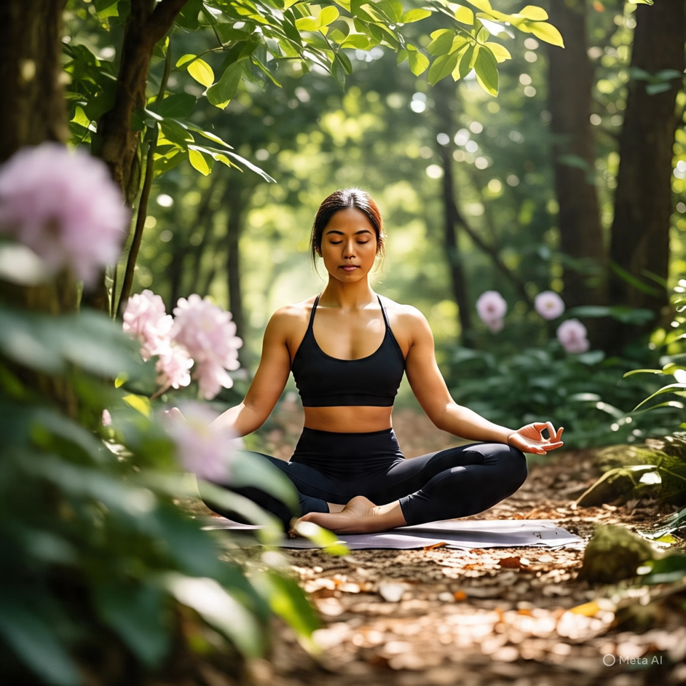
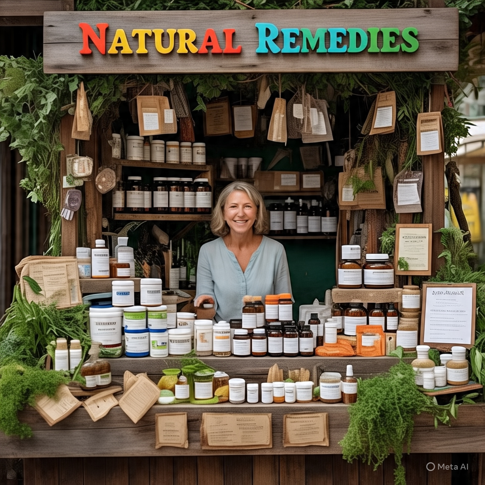

Introdução
Sabemos que a relação entre saúde e bem-estar pode variar significativamente entre o campo e a cidade devido às diferenças no estilo de vida, ambiente e acesso a recursos. Trazendo diversas vantagens e desvantagens como:
Vantagens encontradas na cidade:
- Ar puro e natureza: O campo geralmente oferece ar mais limpo e acesso direto à natureza, o que pode contribuir para uma melhor saúde respiratória e mental.
- Alimentação mais saudável: A proximidade com a produção de alimentos orgânicos e naturais pode incentivar uma dieta mais saudável.
- Menos poluição sonora: O ambiente mais tranquilo pode reduzir o estresse e melhorar a qualidade do sono.
Desafios enfrentados no campo:
- Acesso limitado a serviços de saúde: Em áreas rurais, pode haver menos hospitais, clínicas e especialistas, tornando o acesso a cuidados médicos mais difícil.
- Isolamento social: A vida no campo pode ser mais isolada, o que pode afetar a saúde mental e o bem-estar social.
- Menos opções de lazer: As atividades de lazer podem ser limitadas em comparação com as cidades.
Vantagens encontradas na cidade:
ortunidades de lazer: As cidades oferecem uma ampla gama de atividades culturais, esportivas e de entretenimento.
- Conexões sociais: A vida urbana proporciona mais oportunidades para interações sociais e construção de redes de apoio.
Desafios enfrentados no campo:
- Poluição e estresse: A poluição do ar, sonora e visual pode afetar a saúde física e mental.
- Estilo de vida sedentário: O ambiente urbano pode incentivar um estilo de vida mais sedentário, especialmente com o uso excessivo de transporte motorizado.
- Custo de vida: O custo de vida nas cidades pode ser mais alto, o que pode afetar a capacidade de acessar alimentos saudáveis e moradia adequada.
E aonde o Vida Rosa entra nisso?
Pensando nisso desenvolvemos um site onde poderemos te ajudar a unir as melhores vantagens de cada um de forma pratica para aqueles que querem reencontrar sua autoestima e bem estar em meio as rotinas corridas. Imagine um lugar onde o ar puro do campo se encontra com a energia vibrante da cidade, criando um equilíbrio perfeito para nutrir seu corpo e alma. No Vida Rosa, acreditamos que a saúde e o bem-estar vão além da ausência de doenças – são sobre viver plenamente, em harmonia com a natureza e consigo mesmo.No Vida Rosa, acreditamos que cada pequeno passo conta. Seja qual for seu objetivo – melhorar a saúde física, encontrar equilíbrio emocional ou simplesmente se sentir melhor –, estamos aqui para apoiá-lo. Explore nosso site, participe de nossa comunidade e comece a construir o caminho para uma vida mais saudável e feliz. Vamos caminhar juntos rumo ao bem-estar!
Dicas
Quando se trata de saúde e bem-estar, é comum pensar que precisamos escolher entre o campo e a cidade. No entanto, é possível aproveitar os benefícios de ambos em nosso dia a dia. Aqui estão algumas dicas práticas para você incorporar em sua rotina e melhorar sua saúde e bem-estar, seja você um amante do campo ou da cidade.
Conexão com a Natureza
1. Passeios ao ar livre: Se você vive na cidade, tente fazer passeios ao ar livre em parques ou jardins próximos. Se você vive no campo, aproveite as trilhas e paisagens naturais.
2. Jardim em casa: Se você não tem tempo para sair de casa, tente criar um jardim em seu quintal ou até mesmo em vasos na varanda. Isso pode ajudar a purificar o ar e trazer um toque de natureza para sua vida.
3. Passeios de bicicleta: Se você vive na cidade, considere fazer passeios de bicicleta em rotas seguras e agradáveis. Se você vive no campo, aproveite as estradas rurais e paisagens naturais.
Alimentação Saudável
1. Compras locais: Se você vive no campo, tente comprar produtos locais e frescos em feiras ou mercados. Se você vive na cidade, procure mercados ou lojas de produtos orgânicos.
2. Cozinhar em casa: Cozinhar em casa pode ser uma ótima maneira de controlar o que você come e garantir que esteja comendo alimentos saudáveis.
3. Frutas e legumes: Tente incluir mais frutas e legumes em sua dieta, seja você um amante do campo ou da cidade.
Atividades Físicas
1. Caminhada: A caminhada é uma ótima atividade física que pode ser feita em qualquer lugar, seja no campo ou na cidade.
2. Yoga ou meditação: O yoga e a meditação podem ser ótimas maneiras de reduzir o estresse e melhorar a saúde mental, seja você um amante do campo ou da cidade.
3. Esportes ao ar livre: Se você vive no campo, aproveite as oportunidades para praticar esportes ao ar livre, como futebol ou basquete. Se você vive na cidade, procure parques ou áreas de lazer que ofereçam opções de esportes.
Dicas para o Dia a Dia
1. Respiração profunda: Tente praticar respiração profunda ao longo do dia para reduzir o estresse e melhorar a saúde mental.
2. Hidratação: Beba água regularmente ao longo do dia para manter a hidratação e melhorar a saúde física.
3. Pausas: Faça pausas ao longo do dia para se esticar e se mover, seja você um amante do campo ou da cidade.
Ao incorporar essas dicas práticas em sua rotina, você pode melhorar sua saúde e bem-estar, seja você um amante do campo ou da cidade. Lembre-se de que a saúde e o bem-estar são uma jornada, e cada pequeno passo conta.
.Comunidade
Bem-vindo à Comunidade Vida Rosa! Aqui, você encontrará um espaço para se conectar com outras pessoas que compartilham seus interesses em saúde e bem-estar. Nossa comunidade é um lugar para compartilhar experiências, pedir conselhos e aprender com os outros.
Grupos de Discussão
- Saúde Física: Discuta sobre exercícios, nutrição e saúde física em geral.
- Saúde Mental: Compartilhe suas experiências e conselhos sobre saúde mental, estresse e ansiedade.
- Bem-Estar: Fale sobre práticas de bem-estar, como meditação, yoga e outras atividades que promovam a paz interior.
Eventos e Atividades
- Webinars: Participe de webinars sobre temas relacionados à saúde e bem-estar, com especialistas convidados.
- Desafios: Junte-se a desafios de saúde e bem-estar, como desafios de exercícios ou desafios de alimentação saudável.
- Encontros Online: Participe de encontros online com outros membros da comunidade para discutir temas de interesse comum.
recursos
- Artigos e Vídeos: Acesse artigos e vídeos sobre saúde e bem-estar, escritos e produzidos por especialistas.
- Dicas e Conselhos: Encontre dicas e conselhos práticos para melhorar sua saúde e bem-estar.
- Fórum de Discussão: Participe de discussões sobre temas relacionados à saúde e bem-estar.
Como Participar
1. Crie uma Conta: Crie uma conta no site para acessar a comunidade.
2. Participe de Grupos: Participe de grupos de discussão e eventos que sejam de seu interesse.
3. Compartilhe suas experiências e conselhos com outros membros da comunidade.
4. Aprenda com as experiências e conselhos dos outros membros da comunidade.
Regras da Comunidade
- Respeito: Trate os outros membros da comunidade com respeito e consideração.
- Conteúdo Apropriado: Certifique-se de que o conteúdo que você compartilha seja apropriado e respeite as regras da comunidade.
- Privacidade: Respeite a privacidade dos outros membros da comunidade e não compartilhe informações pessoais sem permissão.
Estamos ansiosos para ter você como parte da nossa comunidade! Juntos, podemos aprender e crescer em nossa jornada para a saúde e o bem-estar.
Produtos naturais
No Vida Rosa, estamos comprometidos em ajudá-lo a encontrar os melhores produtos naturais para melhorar sua saúde e bem-estar. Aqui estão algumas recomendações de produtos que podem beneficiar sua saúde física e emocional:
Suplementos Naturais
1. Ômega 3: O óleo de peixe rico em ômega 3 é conhecido por suas propriedades anti-inflamatórias e benefícios para a saúde cardiovascular.
Você pode encontrar ômega 3 de alta qualidade em:
- Loja online da Natura
- Farmácias de manipulação como a Extrafarma
2. Probióticos: Os probióticos são bactérias benéficas que podem ajudar a melhorar a saúde digestiva e fortalecer o sistema imunológico.
Você pode encontrar probióticos em:
- Loja online da Probiotico
- Supermercados como o Mufatto
3. Vitaminas Naturais: As vitaminas naturais podem ajudar a preencher lacunas nutricionais e promover a saúde geral.
Você pode encontrar vitaminas naturais em:
- Loja online da Vitamina Mais
- Farmácias como a Drogasil
Produtos de Cuidados Pessoais
1. Óleos Essenciais: Os óleos essenciais podem ser usados para promover relaxamento, reduzir estresse e melhorar a saúde da pele. Você pode encontrar óleos essenciais em:
- Loja online da Aromatherapy
- Lojas de produtos naturais como a Mundo Verde
2. Cremes e Loções Naturais: Os cremes e loções naturais podem ajudar a hidratar e proteger a pele. Você pode encontrar cremes e loções naturais em:
- Loja online da Natura
- Lojas de produtos naturais como a Erva Mate
Alimentos Naturais
1. Chás Herbais: Os chás herbais podem ser usados para promover relaxamento, reduzir estresse e melhorar a saúde digestiva. Você pode encontrar chás herbais em:
- Loja online da Chá Brasil
- Supermercados como o Carrefour
2. Alimentos Orgânicos: Os alimentos orgânicos são produzidos sem o uso de pesticidas e fertilizantes químicos, o que pode ser benéfico para a saúde e o meio ambiente.
Você pode encontrar alimentos orgânicos em:
- Feiras de produtos orgânicos
- Supermercados como o Mufatto
Dicas para Comprar Produtos Naturais
1. Verifique a rotulagem: Certifique-se de que os produtos sejam rotulados como "naturais" ou "orgânicos" e contenham ingredientes de alta qualidade.
2. Pesquise sobre a marca: Verifique a reputação da marca e leia as avaliações de outros clientes.
3. Consulte um profissional: Se você tiver alguma dúvida ou preocupação, consulte um profissional de saúde antes de usar qualquer produto natural.
Caso precise de mais informaçoes consulte nossa comunidade.